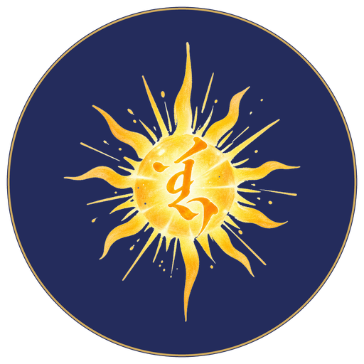

Гэрэл
хүүхдийн номын сан
Тавиурууд
← Тавиурууд
☰ Цэс
◐ Өнгө
? Тусламж
⤓ Суулгах
Нэвтрэх
Бидний тухай
▶ Үргэлжлүүлэх
Сонсох
Сонсох ба унших
Унших
Нэвтрэх
Ном татаж авахын тулд нэвтэрнэ үү
Нэвтрэх
← Буцах
—
← Буцах

◀
Өмнөх
▶ Сонсох
Дараах
▶
Бүлгүүд
Том үсгээр
Хурд 1×
Эхнээс нь
Монголоор
Хавчуурга
←
А−
А+
◀
▶ Сонсох
▶
Бүлгүүд
▶
Үргэлжлүүлэх
Зогссон газраас
↺
Эхнээс нь
Шинээр эхэлнэ
Товчлуурууд
Хаах
Бүлгүүд
Хаах